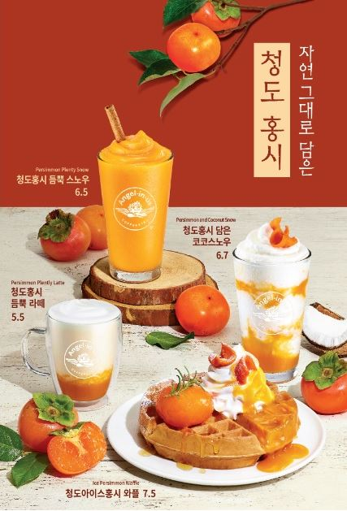

함수를 활용하여 배너 구현하기
구현순서
banner영역을 만들고 이미지 태그요소를 사용하여 첫번째 이미지를 삽입한다.
아이콘 폰트를 사용하여 좌, 우 끝에 방향표시 버튼을 삽입한다.
자바스크립트에서 nextimg, previmg함수를 각각 작성하여 총 이미지 개수 4장을 초과하지 않게 조건식을 작성한다.
좌, 우 버튼에 이벤트를 사용하여 각각 클릭하면 해당 함수가 호출되게 하고, 이미지, 해당 번호가 표시되게 한다.
